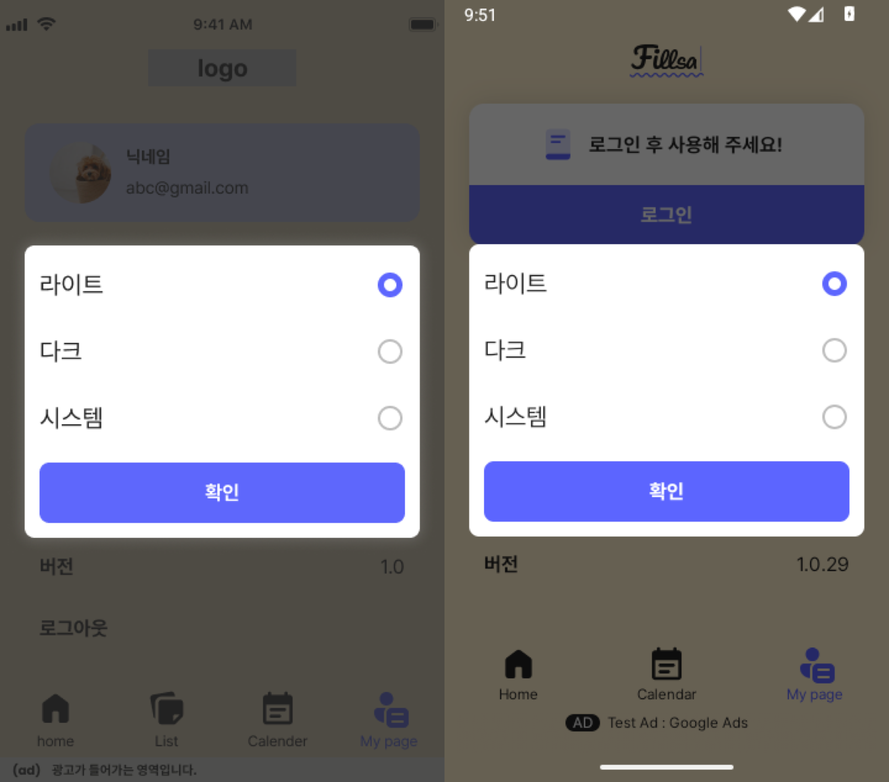
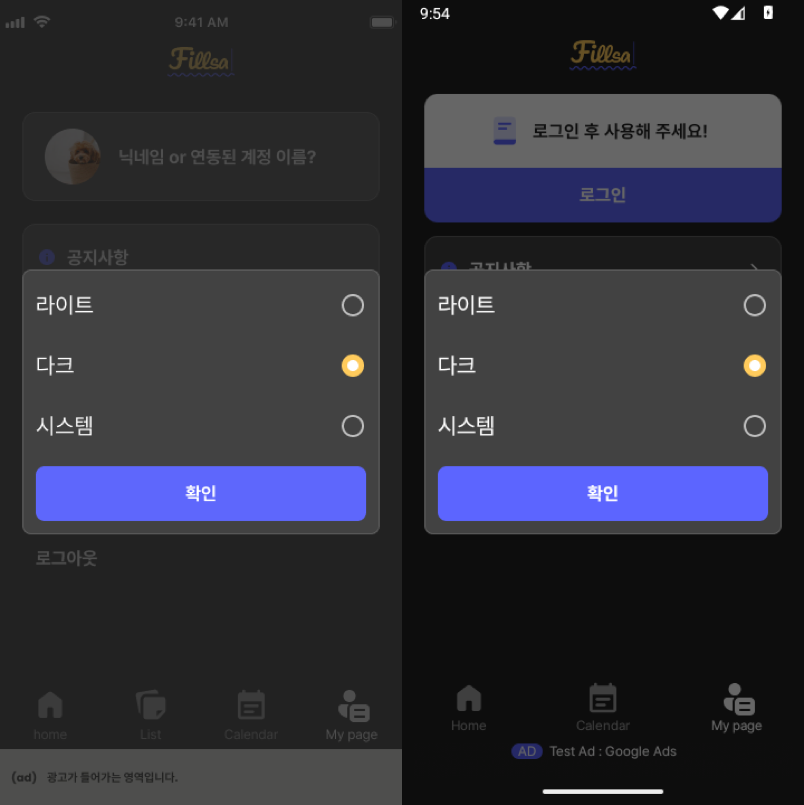
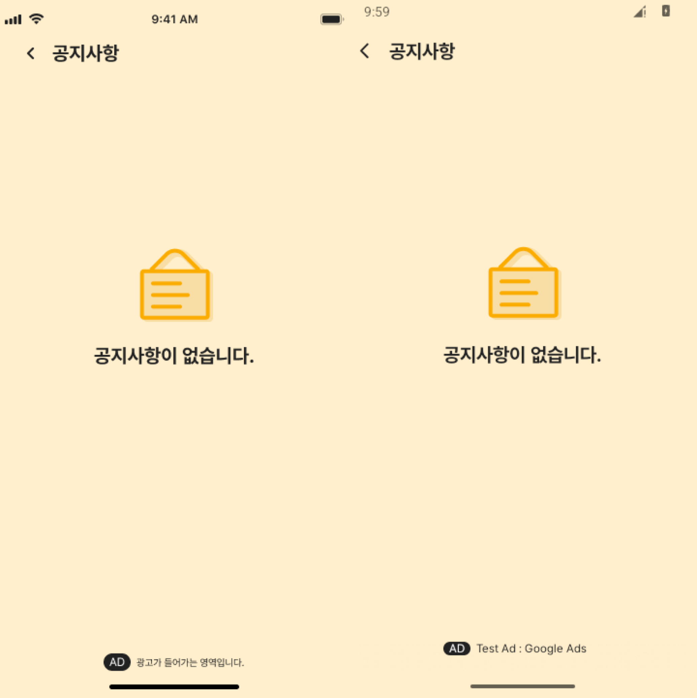
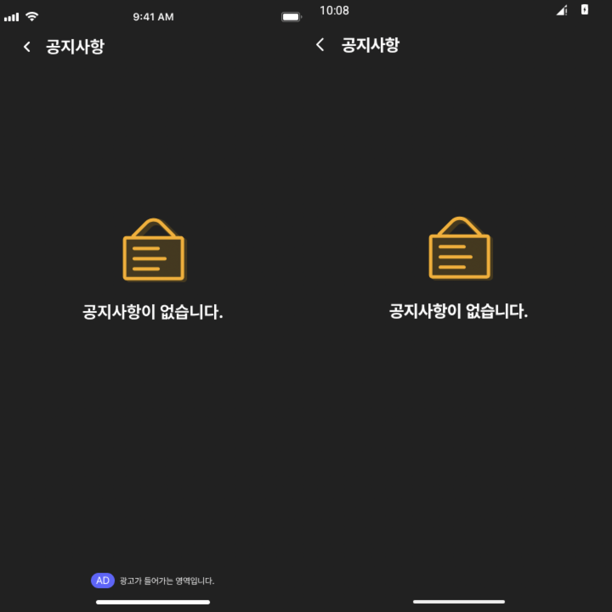
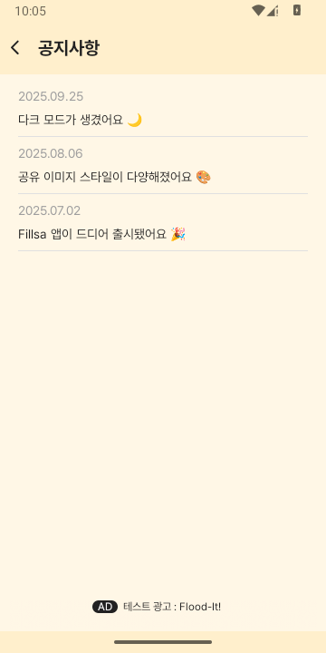
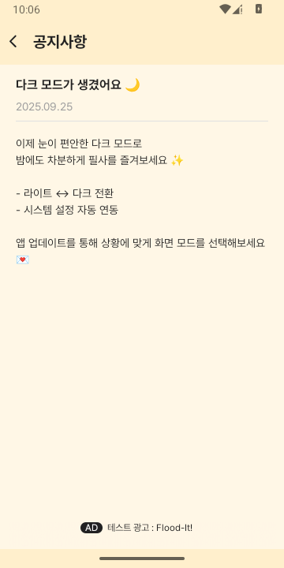
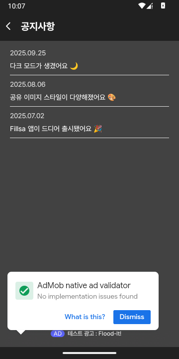
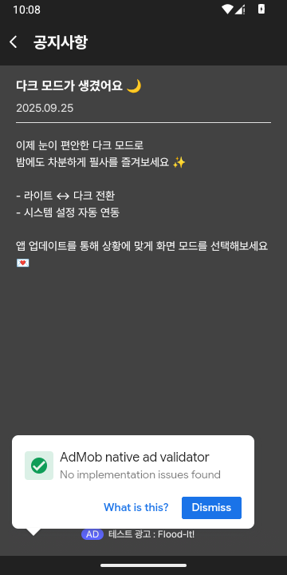
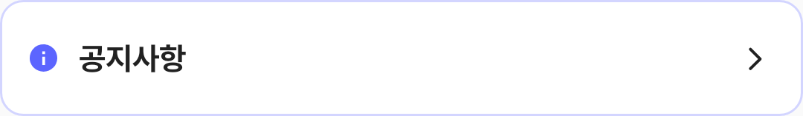

QA checklist · progress report
수정은 진행됐고,
최종 확인은 남았습니다
테마 팝업과 공지사항의 Figma 차이를 고쳐 에뮬레이터에서 부분 대조했습니다. 아래 비교 이미지를 누르면 크게 볼 수 있습니다. 운영 증거와 새 Compose Preview가 확보되기 전에는 미완료 항목을 Completed로 옮기지 않습니다.
항목별 판정
테마 선택 팝업 크기조정 ↗
In progress20sp 글자·30dp 간격, 라이트 선택 아이콘과 다크 테두리를 Figma에 맞췄습니다. 에뮬레이터에서 팝업 크기와 선택 저장을 부분 확인했습니다.
남은 확인: 새 Preview, 로그인된 전체 화면, 광고·dim·시스템 UI 비교. 상세 QA
공지사항 광고 배경색상 ↗
In progress목록·상세·빈 상태의 light/dark 배경색 표본을 Figma와 대조했습니다. 빈 상태 배치와 다크 상태 표시줄 아이콘도 수정했습니다.
남은 확인: 새 Preview와 실제 공지·광고 데이터가 들어간 전체 화면의 수용 기준. 상세 QA
팝업 디자인 ↗
In progress기존 Figma QA 노드 2554:2201는 팝업 사례 사진이 담긴 섹션입니다. 구현 기준인 v3.0 디자인 프레임은 아직 확인되지 않았습니다.
남은 확인: 정확한 v3.0 프레임·표시 조건과 운영 빌드 캡처. 검증 계획
위젯 디자인 ↗
In progress제공된 Figma 섹션에서 2×2·4×2 위젯 변형을 정리했습니다. 운영 런처 및 구성 화면은 아직 캡처하지 않았습니다.
남은 확인: 선택 미리보기 테두리 Figma 프레임, 운영 빌드와 런처 캡처. 상세 QA
로그인 시간 만료 반복 ↗
Not started코드에는 빈 refresh token 방어와 401/403의 세션 삭제·로그인 이동 경로가 있습니다. 하루 뒤·재설치 직후의 반복 현상이 실제로 해결됐는지는 확인하지 못했습니다.
남은 확인: 재현 단계와 운영 로그·캡처. 조사 기록
앞서 Completed로 옮긴 연속필사 안내와 테마 추가는 이번 Notion 재조회에서도 Completed입니다. 이번 보고서로 바꾼 Notion 상태는 없습니다.
추가 작업에 필요한 자료
받는 즉시 해당 항목부터 검증할 수 있습니다
팝업이 실제로 표시된 디자인 프레임 URL·노드 ID와 표시 경로를 알려주세요. 현재 QA 사진만으로는 구현 기준을 확정할 수 없습니다.
위젯 설정 화면에서 선택된 2×2/4×2 미리보기 테두리가 보이는 Figma 프레임 URL·노드 ID가 필요합니다.
테마의 로그인 상태를 재현할 테스트 계정 접근 방법, 공지 예시 데이터 또는 실제 공지·광고 내용을 어떤 기준으로 비교할지 알려주세요. 비밀번호는 보고서에 적지 마세요.
검증할 운영 앱 버전/빌드, 팝업과 위젯의 기기·진입 경로, 로그인 만료가 반복된 시각·단계·로그가 필요합니다.
결과물 이미지 비교
각 이미지: 왼쪽 Figma / 오른쪽 Android
이미지를 클릭하면 원본 크기로 확대합니다. 비교에 사용한 Android 캡처는 API 35, 160dpi, 360×634 또는 360×720px의 별도 QA 에뮬레이터에서 촬영했습니다.
테마 팝업


공지사항 빈 상태


실제 공지 데이터의 목록·상세
배경색 표본은 Figma와 일치합니다. 실제 공지 제목·본문·날짜는 Figma 예시와 다릅니다.




Android CLI Compose Preview
수정 컴포넌트 검증 대기Android Studio Quail 1의 android studio check 결과 Fillsa는 READY였습니다. 같은 렌더링 기능으로 기존 Preview는 성공했고, 이번에 추가한 Preview는 Studio에서 선언을 찾지 못했습니다.
기존 Preview · 렌더링 성공
MyPageItemPreview 이미지 1080×157px 및 공지사항 semantics를 확인했습니다. CLI 기능 대조군이며 이번 수정의 통과 증거는 아닙니다.

신규 Preview · 요소 탐색 실패
ThemeItemLightPreview, ThemeDialogLightPreview, NoticeEmptyAdLightPreview 모두 Failed to find preview element를 출력하고 PNG를 만들지 않았습니다.
find-declaration도 새 함수를 찾지 못했으며 analyze-file은 이전 소스의 경고를 반환했습니다. Studio 소스 인덱스 동기화가 필요합니다.
실행 명령 보기
~/.local/bin/android studio check
~/.local/bin/android studio render-compose-preview \
presentation/src/main/java/com/arakene/presentation/ui/mypage/MyPageItem.kt \
MyPageItemPreview --project Fillsa --pid 2279 \
--output-image-file=docs/design-qa/artifacts/2026-10-05-runtime/preview-cli-control-mypage-item.png \
--print-semantics
~/.local/bin/android studio render-compose-preview \
presentation/src/main/java/com/arakene/presentation/ui/mypage/ThemeDialog.kt \
ThemeItemLightPreview --project Fillsa --print-semantics실패 명령도 출력상 종료 코드가 0이므로 오류 메시지와 이미지 파일 생성 여부를 함께 확인했습니다. 명령 전체와 결과는 Markdown 원본 보고서에 있습니다.
다음 검증 순서
- Studio가 최신 소스를 읽도록 동기화하고 테마·공지 하위 Preview 이미지와 semantics를 다시 얻습니다.
- 하위 컴포넌트를 Figma 영역과 대조해 남은 차이를 수정합니다.
- 로그인·공지·광고 조건을 맞춘 전체 런타임 프레임을 다시 비교합니다.
- 팝업·위젯·로그인 만료의 운영 증거를 각각 확인하고, 조건을 모두 충족한 항목만 Notion Completed로 옮깁니다.